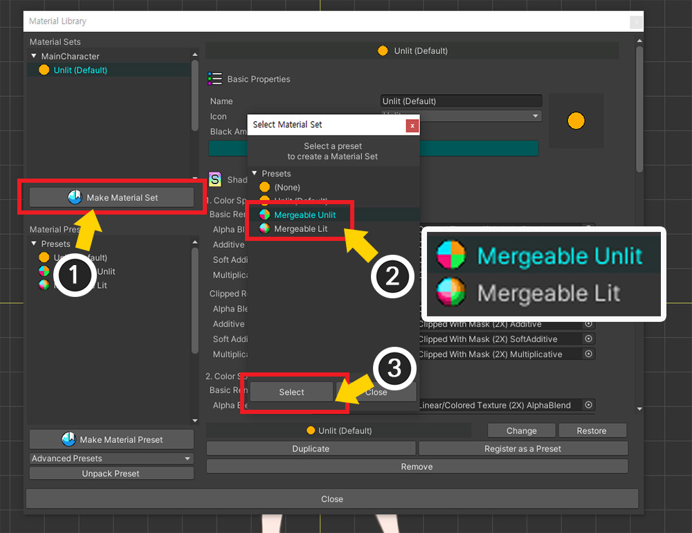

AnyPortrait > 메뉴얼 > 재질 병합하기
재질 병합하기
1.3.5
AnyPortrait는 다수의 Mesh Renderer들을 순서대로 렌더링하는 방식을 사용합니다.
그런데 이 방식은 자칫 드로우콜을 크게 증가시키는 요인이 됩니다.
그래서 AnyPortrait는 드로우콜을 줄이기 위한 다양한 시스템을 가지고 있습니다. (관련 페이지)
하지만 기존의 드로우콜 최적화 시스템은 동일한 이미지 및 재질을 가진 경우에 한정해서 동작하는 한계가 있었습니다.
하나의 캐릭터에 두개 이상의 이미지가 포함되어 있거나, 두개의 캐릭터를 동기화하여 하나의 캐릭터처럼 보이고자 할 경우엔 이 한계점이 크게 부각되버립니다.
AnyPortrait v1.3.5에서 추가된 재질 병합 기능은 이 한계점을 조금 더 완화합니다.
이미지가 다르더라도 쉐이더(Shader)가 같다면, 여러개의 재질을 한번에 렌더링할 수 있습니다.
이 페이지에서는 재질 병합 기능을 사용하는 방법과 특징, 주의점 등을 다룹니다.
특히 이 기능을 효과적으로 사용할 수 있는 캐릭터 동기화 예제를 활용하여 설명을 드립니다.
캐릭터 동기화와 관련된 스크립트를 이 페이지에서는 자세히 소개하지 않으므로, 관련 페이지를 대신 참고해주세요.
드로우콜과 실행 성능의 관계
유니티의 최적화 가이드에서는 드로우콜을 가능한 줄여야 한다고 안내합니다.
실제로 드로우콜 최적화는 모든 게임 엔진들에서 최우선으로 여겨지는 성능 최적화 요령입니다.
반대로 말하면, 이것은 엔진 사용자 뿐만 아니라 엔진 개발자에게도 중요한 과제로 여겨집니다.
이러한 배경에서, 유니티도 드로우콜이 실행 성능에 주는 영향을 점점 줄이고 있습니다.
(포럼에 의하면 유니티 5부터 효과적으로 관리되는 것으로 보여집니다.)
따라서 최근의 엔진 사용자들은 드로우콜 관리를 느슨하게 해도 큰 문제를 겪지 않습니다.
제한된 사양의 기기에서 실행되는 것을 목표로 하는 것이 아니라면, 사용자는 드로우콜 최적화를 힘들게 하여 얻을 수 있는 실행 성능의 이득은 크지 않을 것입니다.
유니티 자체의 최적화 성능이 충분히 향상되었기 때문입니다.
(특히 후술할 SRP Batch가 대표적입니다.)
결과적으로, 여러분의 프로젝트의 성능에 문제가 없다면, 드로우콜에 대해서 미리 스트레스 받지 않으셔도 됩니다.
두개 이상의 캐릭터의 재질을 병합하기
설명을 위해 캐릭터의 의상을 교체하는 예제를 준비했습니다. (관련 페이지)
이 예제에서는 "MainCharacter"와 "Costume" 객체들이 서로 동기화하여 하나의 캐릭터처럼 동작합니다.

하지만, "Costume"의 메시들이 "MainCharacter"의 메시들의 사이사이에 배치되면서 위와 같이 드로우콜이 크게 증가합니다.
이것은 "MainCharacter"와 "Costume"가 각각 다른 이미지를 가지면서 드로우콜이 병합될 수 없었기 때문입니다.
드로우콜은 3개(배경과 2개의 캐릭터 객체)가 예상되지만, 실제로는 그보다 더 많은 14가 기록되었습니다.
렌더링 과정을 자세히 보기 위해서 "Frame Debugger"를 실행해봅시다.
유니티 메뉴의 Window > Analysis > Frame Debugger를 실행합니다.
(메뉴의 위치는 유니티 버전마다 다를 수 있습니다.)

(1) 게임을 실행하고 Enable 버튼을 누릅니다.
(2) 현재의 렌더링 정보를 볼 수 있습니다.
렌더링 단계를 하나씩 순서대로 보여주는 이미지입니다.
"MainCharacter"의 메시들과 "Costume" 메시들이 번갈아가면서 렌더링되는 것을 볼 수 있습니다.
재질이 병합되지 않는다면 위와 같이 드로우콜이 지나치게 증가할 수 있음을 알 수 있습니다.

재질 병합 기능을 사용하기 위해서는 전용 재질을 이용해야 합니다.
(1) AnyPortrait 에디터를 열어서 캐릭터를 선택하고, Root Unit을 선택합니다.
(2) Material Library 버튼을 누릅니다.
(재질 라이브러리 사용법에 대한 자세한 설명은 관련 페이지를 참고해주세요.)

(1) 프리셋 중 "Mergeable Presets"을 선택합니다.
(프로젝트의 렌더 파이프라인이 URP로 설정되어 있다면, "URP (2021) Presets"을 대신 선택합니다.)
(1) 프리셋이 선택된 상태에서 Unpack Preset 버튼을 누릅니다.
(2) 패키지 설치 이후에 재질 라이브러리를 재시작해야한다는 메시지가 나타납니다.
Okay 버튼을 누릅니다.
패키지가 모두 설치되고 다시 재질 라이브러리를 엽니다.
설치된 "Mergeable" 프리셋을 볼 수 있습니다.
Unlit 재질과 Lit 재질, 총 2개의 재질 프리셋이 보입니다.

설치된 재질 프리셋을 이용해서 재질 세트를 만들어봅시다.
(1) Make Material Set 버튼을 누릅니다.
(2) 설치된 Mergeable 프리셋 중 하나를 선택합니다. 이 페이지에서는 라이팅을 하지 않을 것이므로 "Mergeable Unlit"을 선택했습니다.
(3) Select 버튼을 누릅니다.

(1) 추가된 재질 세트를 선택합니다.
(2) Default Material 버튼을 눌러서 ON으로 활성화합니다.

Bake를 실행합니다.

재질을 병합할 다른 캐릭터를 열고, 위 과정을 반복합니다.
이제 두개의 캐릭터는 이미지는 다르지만 동일한 "Mergeable Unlit" 쉐이더로 렌더링되는 상태가 되었습니다.
스크립트를 작성하여 재질을 병합해봅시다.
(캐릭터 동기화에 대한 스크립트 설명이나 함수는 생략되어 있습니다. 관련 페이지에서 자세한 설명을 확인하세요.)
using UnityEngine;
using AnyPortrait;
public class MergeMaterialScript : MonoBehaviour
{
public apPortrait mainCharacter;
public apPortrait costumePrefab;
private apPortrait _attachedCostume = null;
void Start() { }
void Update()
{
// Q키를 누르면 의상을 캐릭터에 부착하고 동기화합니다. (함수 설명 생략)
if (Input.GetKeyDown(KeyCode.Q))
{
// 의상이 부착되면 _attachedCostume 변수에 의상 객체가 할당됩니다.
AttachCostume();
}
// W키를 누르면 부착된 의상을 제거합니다.
if (Input.GetKeyDown(KeyCode.W))
{
// 의상을 제거하기 전에 재질 병합을 해제합니다.
mainCharacter.UnmergeMaterials();
// 동기화를 해제하고 의상을 제거합니다. (함수 설명 생략)
// _attachedCostume 변수는 null이 됩니다.
DetachCostume();
}
// A키를 누르면 부착된 의상과 재질을 병합합니다.
if (Input.GetKeyDown(KeyCode.A))
{
if(_attachedCostume != null)
{
mainCharacter.MergeMaterials(_attachedCostume);
}
}
// S키를 누르면 부착 여부에 상관없이 재질 병합을 해제합니다.
if (Input.GetKeyDown(KeyCode.S))
{
mainCharacter.UnmergeMaterials();
}
}
(AttachCostume, DetachCostume 함수에 대한 설명은 생략)
}
재질 병합과 관련된 함수들이 사용된 것을 위의 스크립트에서 보실 수 있습니다.
- MergeMaterials : apPortrait 객체들을 인자로 입력하여 재질을 병합합니다. 여러개의 apPortrait를 입력하거나 아무것도 입력하지 않아도 동작합니다.
- UnmergeMaterials : 재질 병합을 모두 해제합니다. 재질이 병합된 apPortrait 객체들의 연결이 모두 해제됩니다.
동기화를 해제하기 전에 UnmergeMaterials 함수를 먼저 호출했다는 점도 확인해주세요.
그리고 이 두 함수들은 내부에 "재질 초기화" 과정을 포함하고 있습니다.
따라서 이 함수들을 호출한 이후에 메시의 색상 등은 원래대로 돌아옵니다.
이제 위 스크립트를 적용하여 렌더링 과정이 얼마나 바뀌었는지 확인해봅시다.

동일하게 Frame Debugger를 켜고 각 경우에 대해서 테스트해보았습니다.
재질을 병합하기 전의 이미지입니다.
앞서 확인했듯이 일부 단계를 제외하고는 대부분의 메시들이 병합되지 않은 상태로 렌더링이 되고 있습니다.

MergeMaterials 함수를 실행하여 재질을 병합한 결과입니다.
두개의 캐릭터를 렌더링하는데 1개의 드로우콜만 발생했습니다.
두개의 캐릭터를 렌더링하는데 예상되는 최소 드로우콜인 2보다 더 최적화된 것입니다!
재질 병합 기능의 특징
재질 병합 기능은 최대 10개의 이미지를 받아서 렌더링할 수 있는 쉐이더를 이용합니다.
이 쉐이더는 메시의 버텍스 색상을 이용하여 어떤 이미지를 사용할 지 결정합니다.
재질 병합 기능은 이 쉐이더의 특성을 활용하여 대상이 되는 모든 메시들을 검사하여 가능한 적은 개수의 재질들을 가지도록 병합합니다.
하지만 이러한 특징으로 인하여 재질 병합 기능은 아래와 같은 제한점들이 있습니다.
- 클리핑 마스크 및 클리핑되는 메시는 제외됩니다.
- Alpha Blend 외의 쉐이더는 제외됩니다.
- 텍스쳐를 지정하여 재질의 속성을 제어하는 스크립트 함수들은 동작하지 않습니다.
- 재질의 속성을 일괄 제어하고자 하는 스크립트 함수는 모든 캐릭터를 대상으로 합니다. (병합된 캐릭터의 일부를 지정할 수 없습니다.)
- 커스텀 속성을 제외하고 이미지 변경이 불가능해집니다. Extra 옵션으로 이미지를 변경할 수 있지만 드로우콜이 증가합니다.
- Mergeable 특성을 가졌더라도 서로 다른 쉐이더들은 서로 병합되지 않습니다.
메시의 재질을 제어하는 스크립트 함수를 사용했을 경우 결과에 어떤 차이가 있는지 확인해봅시다.
하나의 캐릭터(MainCharacter)를 대상으로 apPortrait의 SetMeshColorAll(Color color2X) 함수를 호출한 경우입니다.
재질이 병합되기 전(왼쪽)에는 함수가 호출된 캐릭터만 색상이 변경됩니다.
하지만 재질이 병합된 후(오른쪽)에는 색상 변경 함수가 호출되지 않은 다른 캐릭터 객체(Costume)의 색상도 같이 변경됩니다.

이미지 이름을 입력하여 색상을 일괄 변경하는 함수인 SetMeshColorAll(sting optTextureName, Color color2X)를 호출한 결과입니다.
(함수의 이름은 동일하지만 인자가 다릅니다.)
재질이 병합되면 텍스쳐를 구분하여 속성을 변경하는 것이 불가능해집니다.
"이미지당 하나의 재질"이라는 기존의 규칙이 적용되지 않기 때문입니다.
따라서 위와 스크립트 함수는 동작하지 않으며, Console 탭에서 해당 로그가 발생했음을 볼 수 있습니다.
메시의 재질을 변경하는 스크립트 함수들은 재질 병합 이후에 위와 같이 다르게 동작하거나 사용이 불가능해집니다.
함수의 변경점을 아래에서 확인해주세요.
(소개되지 않은 함수들은 기존과 동일하게 동작합니다.)
재질이 병합된 모든 캐릭터로 대상이 확장되는 함수들
: 모든 메시를 대상으로 재질의 속성을 변경하는 함수들은 그 대상이 확장됩니다.
- ResetMeshMaterialToBatchAll()
- SetMeshAlphaAll(float alpha)
- SetMeshCustomAlphaAll(float alpha, string propertyName)
- SetMeshColorAll(Color color2X)
- SetMeshCustomColorAll(Color color, string propertyName)
- SetMeshCustomImageAll(Texture2D texture, string propertyName)
- SetMeshCustomTextureOffsetAll(Vector2 textureOffsetValue, string propertyName)
- SetMeshCustomTextureScaleAll(Vector2 textureScaleValue, string propertyName)
- SetMeshCustomFloatAll(float floatValue, string propertyName)
- SetMeshCustomIntAll(int intValue, string propertyName)
- SetMeshCustomVector4All(Vector4 vector4Value, string propertyName)
사용이 불가능한 함수들
: 텍스쳐를 대상으로 일괄 변경하는 함수들은 동작하지 않습니다.
- ResetMeshMaterialToBatchByTextureName(string optTextureName)
- SetMeshImageAll(string optTextureName, Texture2D texture)
- SetMeshCustomImageAll(string optTextureName, Texture2D texture, string propertyName)
- SetMeshColorAll(string optTextureName, Color color2X)
- SetMeshAlphaAll(string optTextureName, float alpha)
- SetMeshCustomColorAll(string optTextureName, Color color, string propertyName)
- SetMeshCustomAlphaAll(string optTextureName, float alpha, string propertyName)
- SetMeshCustomFloatAll(string optTextureName, float floatValue, string propertyName)
- SetMeshCustomIntAll(string optTextureName, int intValue, string propertyName)
- SetMeshCustomVector4All(string optTextureName, Vector4 vector4Value, string propertyName)
재질 병합이 드로우콜을 줄이는 가장 좋은 방법인가요?
AnyPortrait의 기존의 드로우콜 최적화 기능이 적용된다면, 동일한 재질을 가진 다른 캐릭터들이 가능한 최소의 드로우콜 내에서 한꺼번에 렌더링될 수 있도록 만듭니다.
하지만 재질 병합이 적용된 캐릭터들은 그 외의 캐릭터들과 함께 렌더링되지 못합니다.
즉, 경우에 따라서는 재질 병합을 시도하지 않고 그대로 두는 것이 더 적은 드로우콜 내에서 렌더링될 수 있습니다.
다른 캐릭터와의 드로우콜 최적화에 대해서는 관련 페이지에서 자세한 내용을 보실 수 있습니다.
1. 재질 병합이 권장되는 경우
- 플레이어 캐릭터처럼, 게임 내에서 유일한 경우
- 동기화 기능을 이용하여 의상, 무기 등을 캐릭터에 장착하는 경우
- 2개 이상의 이미지를 가지며 많은 메시들을 가진 캐릭터를 최적화하고자 하는 경우
- 캐릭터에 색상 효과 등을 자주 사용하여 캐릭터들간의 드로우콜 공유가 잘 되지 않는 경우
2. 재질 병합이 권장되지 않는 경우
- 몬스터 캐릭터처럼, 게임 내에 동일한 캐릭터가 다수 존재하는 경우
- 캐릭터의 이미지가 1개이며 색상 효과를 자주 사용하지 않는 경우
URP 2D 환경에서 재질 병합하기

위와 같이 프로젝트의 렌더 파이프라인이 2D Renderer를 사용하는 URP인 경우엔 다른 재질을 이용해야합니다.

(1) 재질 라이브러리를 엽니다.
(2) "URP (2021) Presets" 패키지를 선택합니다.
(1) Unpack Preset 버튼을 누릅니다.
(2) 설치가 완료되고 다시 재질 라이브러리를 열면 URP용 프리셋들이 설치된 것을 볼 수 있습니다.
(3) Make Material Set 버튼을 누릅니다.
(4) URP용 Mergeable 재질들을 선택합니다. 라이팅 여부에 따라서 Unlit 또는 2D Lit을 적절히 선택해주세요.
(5) Select 버튼을 누릅니다.

(1) 생성된 재질 세트를 선택합니다.
(2) Default Material 버튼을 눌러서 ON으로 활성화합니다.

다른 캐릭터 객체도 동일한 재질을 가지도록 같은 방법으로 설정합니다.
이제 앞서 사용한 스크립트를 이용해서 같은 테스트를 해봅시다.
게임을 실행하고 재질 병합 전후로 드로우콜이 어떻게 바뀌는지 확인해봅시다.

하지만 이상하게도 재질 병합 여부에 관계없이 드로우콜은 동일하게 15를 기록합니다.
이것은 이 페이지의 서두에서 설명드린 "유니티의 드로우콜 최적화"와 관련되어 있습니다.
URP와 같은 SRP(Scriptable Render Pipeline)을 사용할 경우, 유니티에서는 별도의 드로우콜 처리 과정을 가집니다.
이 과정을 "SRP Batch"라고 부릅니다.
SRP Batch 내에서 서로 다른 재질의 메시들이 한꺼번에 렌더링됩니다.
Frame Debugger에서 SRP Batch가 어떻게 동작하는지 확인해봅시다.

재질 병합을 하기 전의 렌더링 과정입니다.
현재의 렌더링 속성을 보면 재질을 병합하기 전임에도 불구하고 이미 드로우콜이 1로 줄어든 상태입니다.
SRP Batch에 의해서 서로 다른 재질을 가진 메시들이 한번에 렌더링이 되어버린 것입니다.

렌더링 속성을 확인하면 하나의 재질에 2개의 텍스쳐가 포함되어 재질이 병합되었음을 알 수 있습니다.
유니티에서 이미 최적화를 했기 때문에 재질이 병합된 이후에도 동일한 결과를 볼 수 있습니다.

사실, URP에서는 굳이 재질 병합을 하지 않아도 괜찮습니다.
다만 재질 병합에 따른 스크립트 함수의 변화를 이용하고자 하는 분들을 위해서 URP용 Mergeable 재질을 제공합니다.
위 이미지처럼 "병합된 캐릭터들을 대상으로 재질의 속성을 일괄 변경하는 특성"을 URP에서 이용할 수 있습니다.
단일 캐릭터의 재질 병합의 효과

재질을 병합하는 함수인 "MergeMaterials"에 인자를 입력하지 않을 수 있습니다.
위와 같이 1개의 캐릭터 내의 2개 이상의 이미지들을 가진 경우를 위함입니다.
고해상도의 일러스트로 캐릭터를 만들 경우 2개 이상의 이미지가 필요한데, 재질 병합 기능은 이때 효과적으로 사용됩니다.

재질 병합을 위한 과정은 위와 동일합니다.
재질 라이브러리에서 Mergeable 프리셋을 기반으로 재질 세트를 생성하고 적용합니다.

게임을 실행해봅시다.
재질이 병합되기 전에는 1개의 캐릭터만 존재함에도 불구하고 여러 단계로 나뉘어서 렌더링이 되고 있습니다.

스크립트를 이용하여 재질을 병합하면 클리핑과 관련된 메시들을 제외하고 나머지 모든 메시들이 최소의 드로우콜로 렌더링되는 것을 볼 수 있습니다.